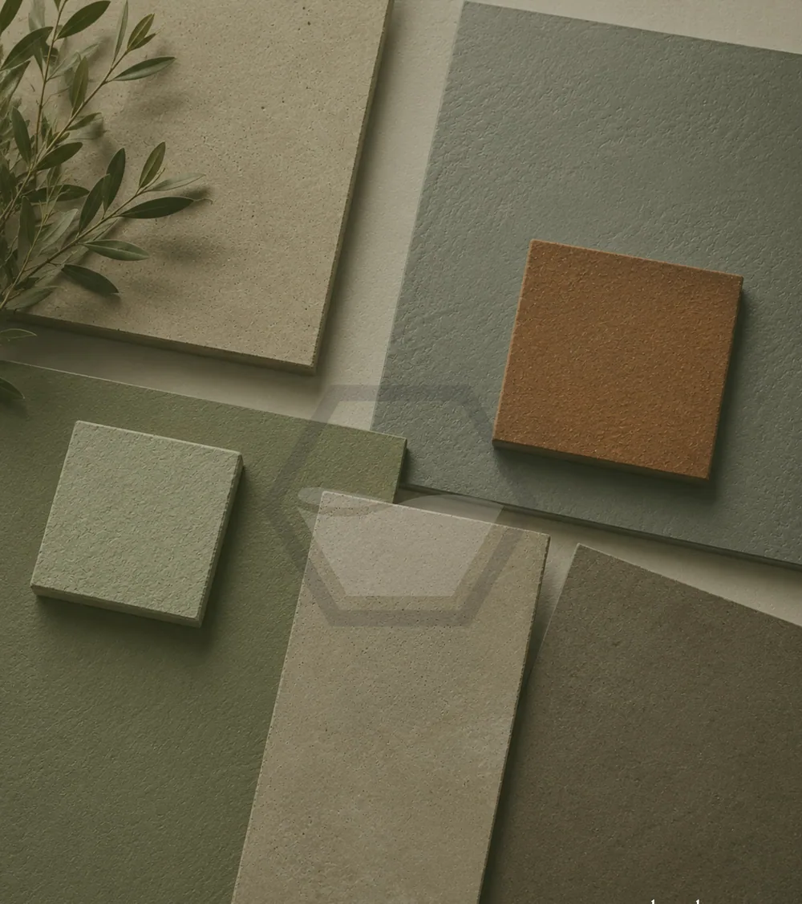
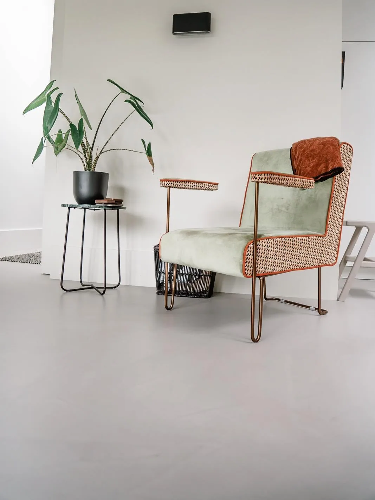
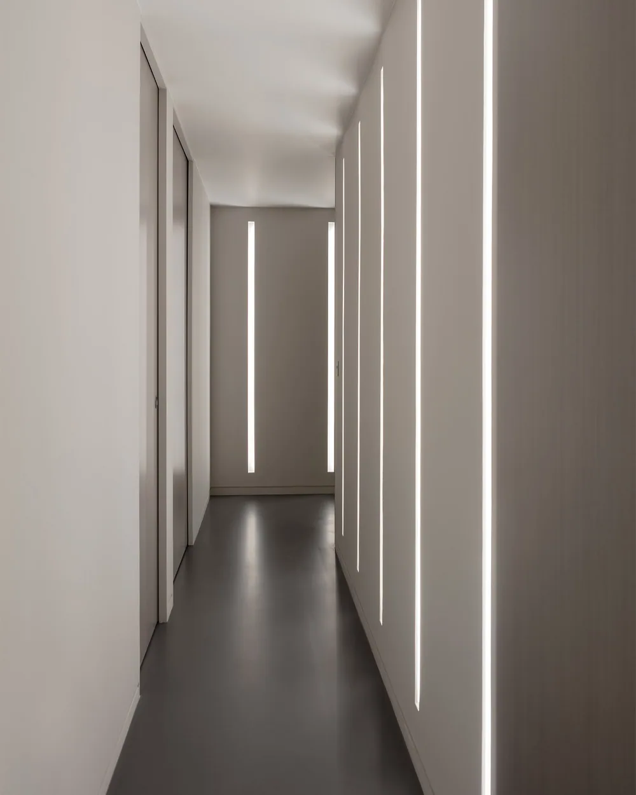
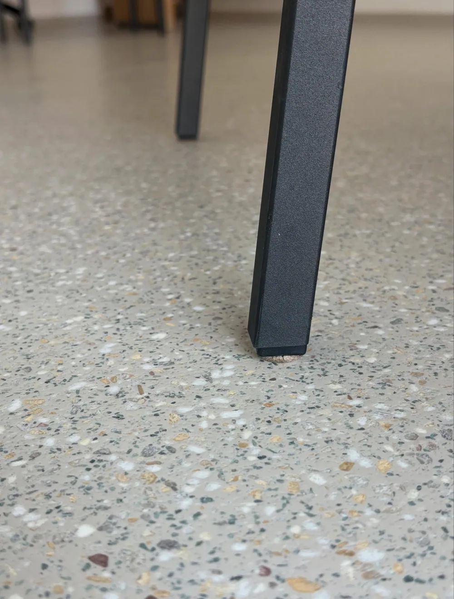
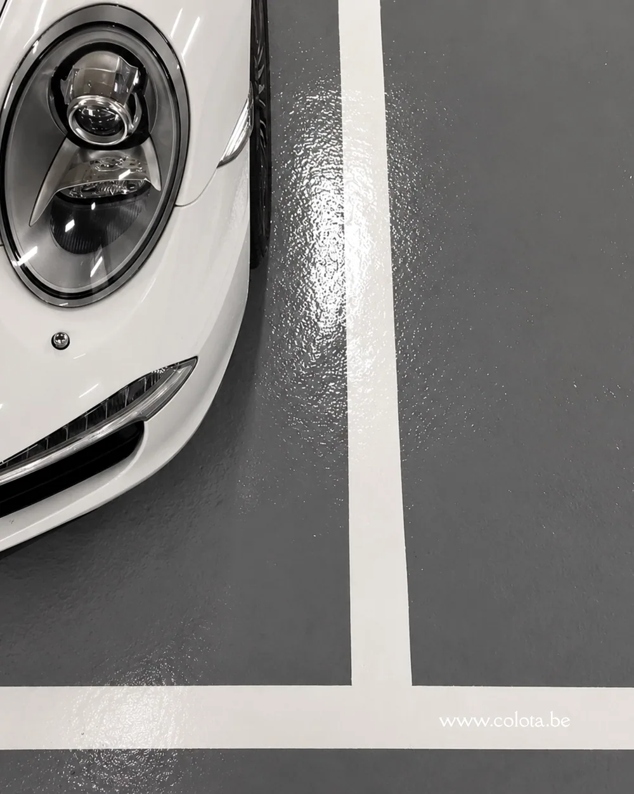
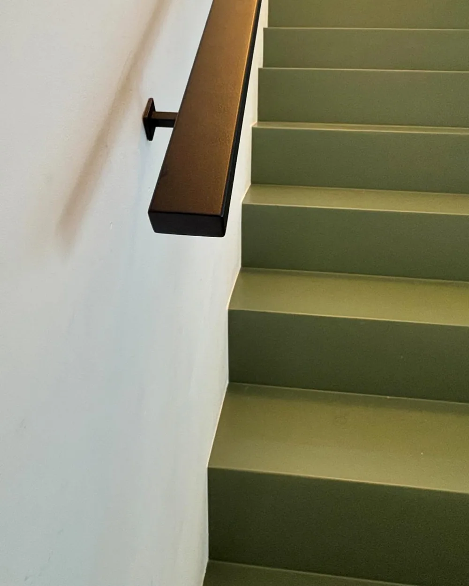
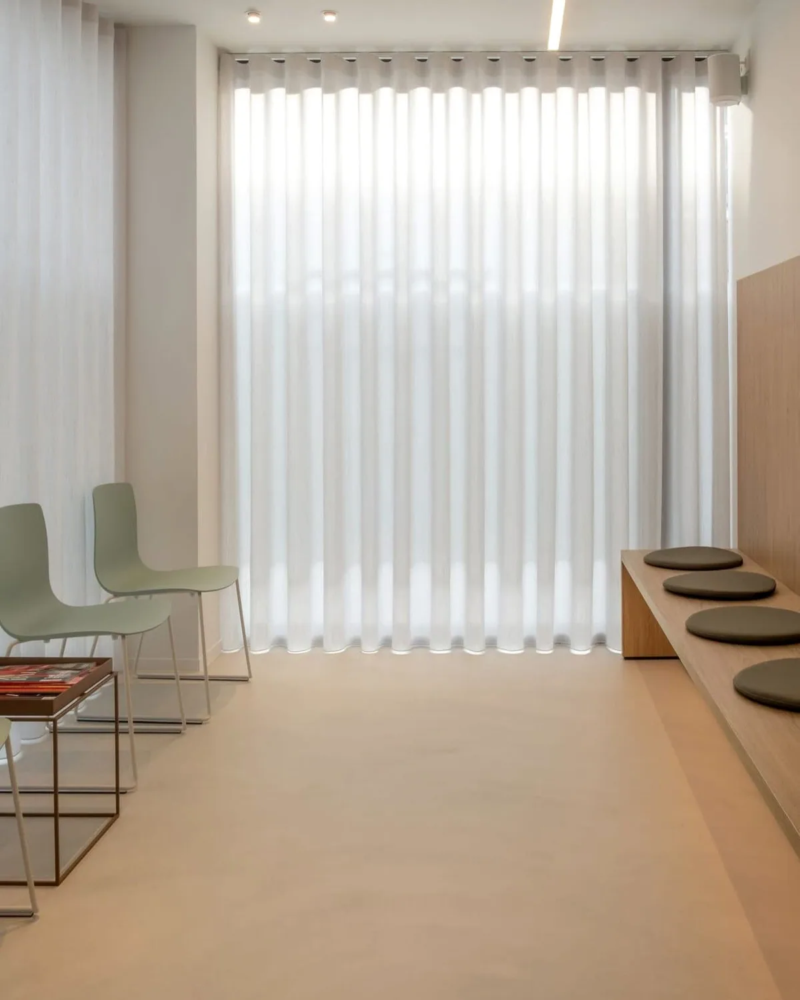
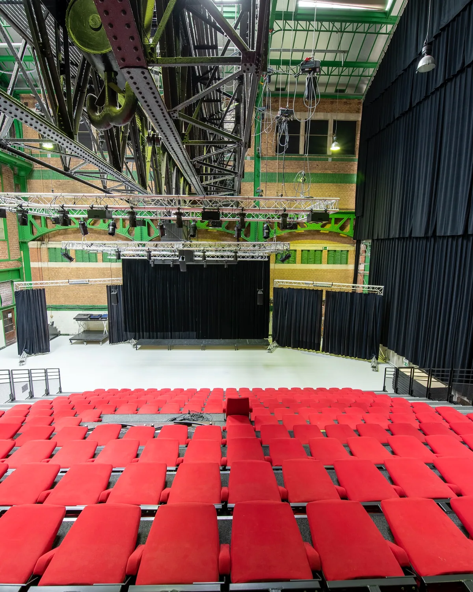
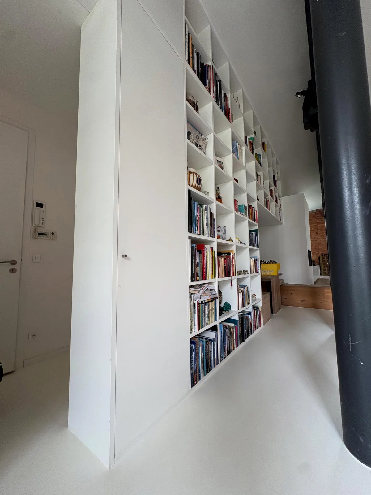
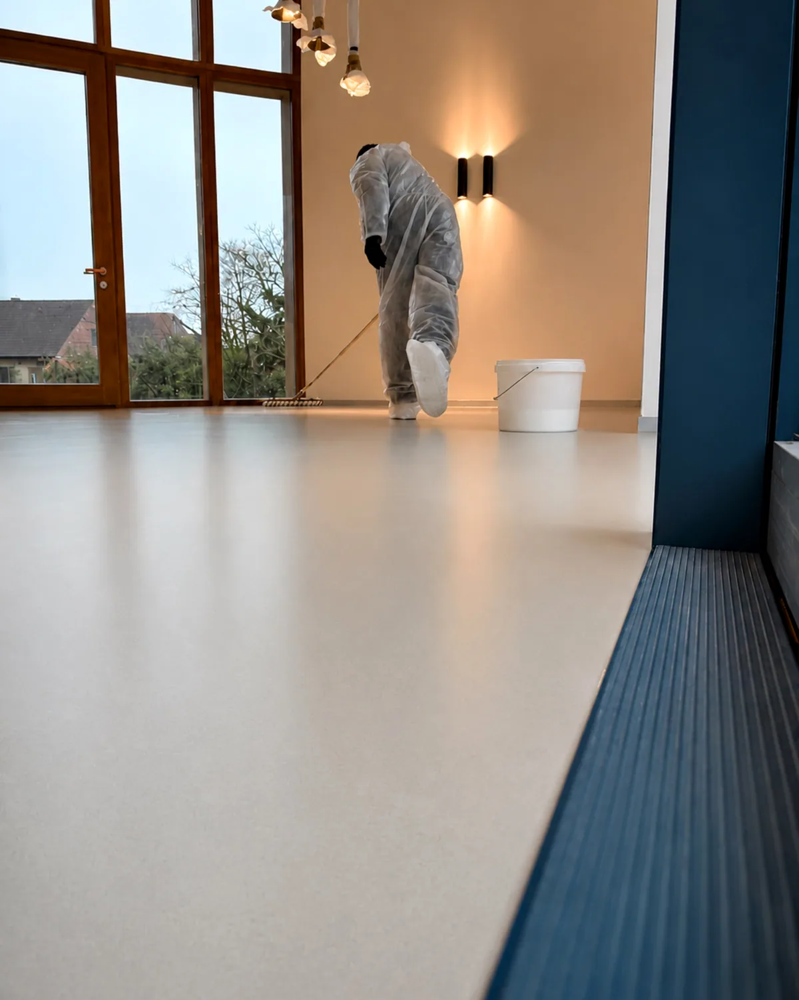

Microcement
Van warme aardetinten tot koele grijzen. Ook op wanden en in de douche, waterdicht en zonder één tegel.
Microcement, PU, terrazzo of epoxy. Wij gieten vloeren, trappen en badkamers in één doorlopend vlak, van je living tot de parkeergarage. Rustig om naar te kijken en makkelijk om te onderhouden.

Van een warme aardetint in je badkamer tot een slijtvaste coating waar elke dag auto's over rijden. We kiezen samen het systeem dat bij je ruimte past.

Van warme aardetinten tot koele grijzen. Ook op wanden en in de douche, waterdicht en zonder één tegel.

Zacht onder je voeten, stil en sterk. De klassieker voor wie één strak vlak door het hele huis wil.

Beton, baksteen, glas en schelpen krijgen een tweede leven in een naadloze terrazzovloer. Elke korrel is anders.

Bestand tegen olie, vocht en dagelijks verkeer. Met strakke markeringen, voor je eigen garage of een hele ondergrondse parking.

Is je trap aan iets nieuws toe? Met PU, epoxy of microcement loopt je vloer gewoon door naar boven.
Ligt er al een gietvloer die nog in goede staat is? Dan gieten we vaak gewoon een nieuwe erover.
Een greep uit wat we de voorbije tijd mochten afwerken. Meer werven volg je op onze Instagram.

Een rustige wachtzaal, samen met interieurarchitect Kris Deneckere.

Een gerenoveerde epoxyvloer onder de staalconstructie van het cultuurhuis.

De bestaande gietvloer bleef liggen, de nieuwe kwam er strak overheen.
De juiste opbouw, techniek en afwerking bepalen hoe je vloer eruitziet en hoe lang hij meegaat. Daar nemen we onze tijd voor.

Voel de stalen en structuren zelf. Of vraag eerst de gratis brochure van de Colota Color Collection.
We bekijken wat er nu ligt. Een bestaande gietvloer in goede staat hoeft vaak niet weg.
Laag per laag, met het systeem dat bij je ruimte past. Microcement, PU, terrazzo of epoxy.
De toplaag bepaalt hoe duurzaam je vloer is. Die rollen we niet zomaar uit, die brengen we met precisie aan.
"Colota heeft bij ons een gietvloer over twee verdiepingen geplaatst. Prachtig resultaat, perfecte afwerking en zeer professionele service. Een aanrader!"HHeather BooneGoogle review
"Renovatie Pu-gietvloer in woning: Prima resultaat en tegen een goede prijs. Top service, timing, uitvoering en nazorg. Dikke pluim voor Zaf en Dale!"Rrudi de backerGoogle review
"Heel tevreden over onze gietvloer van Colota! Vlotte communicatie, correcte afspraken en een prachtige afwerking. Alles verliep zoals afgesproken. Zeker een aanrader!"MMarilynn McgillGoogle review
Een kleur op een scherm is iets anders dan een staal in je hand. Kom langs in onze showroom in Gent, of stuur ons een foto van je ruimte. Dan zeggen we je eerlijk wat kan.
Ik maakte deze demo voor jullie om te tonen wat er kan. Na een kort gesprek maak ik er iets veel persoonlijkers van, helemaal naar jullie wens.
Vrijblijvend. Ik kom langs of we bellen.
Op maat, op jullie eigen domein.
Geen voorschot. Jullie betalen pas als alles klaar is.
Hosting, domeinnaam en kleine wijzigingen, zoals nieuwe openingsuren.
Omdat een voorbeeld meer zegt dan een mail. Zo zien jullie meteen wat er kan, en het kost jullie niets.
Nee. Het gesprek is vrijblijvend. Vinden jullie het niks, dan is het daarmee gedaan.
Na ons gesprek staat jullie site binnen 10 tot 14 dagen online.
Zeker. Jullie domeinnaam kan gewoon blijven, de nieuwe site komt in de plaats van de oude.
Nee, dat doe ik op basis van ons gesprek. Eigen foto's zijn mooi meegenomen, maar niet nodig om te starten.